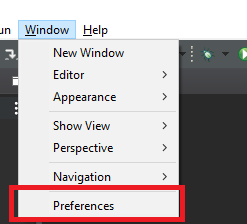
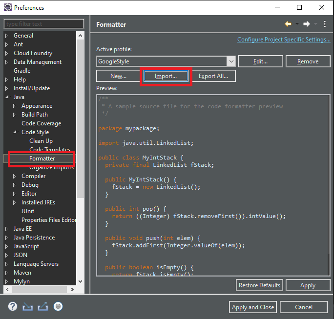
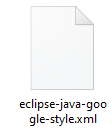
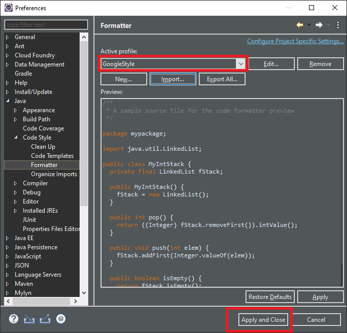
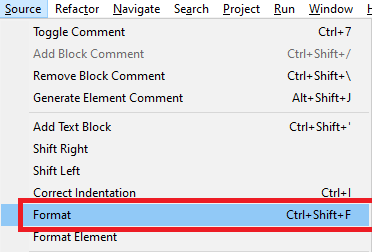
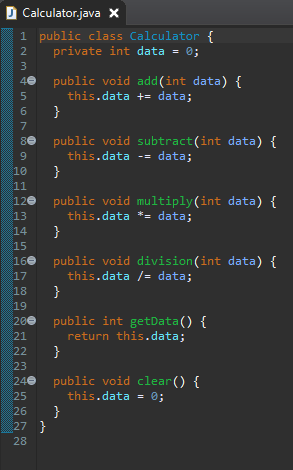

[Java] 35. コーディング規約設定(Google Standard coding style)
こんにちは。明月です。
この投稿はJavaのコーディング規約設定(Google Standard coding style)に関する説明です。
プログラムプロジェクトを作成する時に様々なルールと規約を設定しなければならない時があります。プロジェクトを一人で作成して運用すれば別に関係ないと思いますが、普通は一人ではなく、多人数で作成するので人の間のコーディングルールと規約を決めて無駄な工数を減らすことが重要だと思います。
例えば、変数名を「abcde」ということに設定して作成したら作成した本人は変数の意味を分かるかも知らないですが、他人の場合はデバックするまでは何の変数かを分かりません。でも変数名は「avg」ということに設定すれば大体に平均値ではないかと予想することができます。
つまり、コーディング規約はプログラム性能やパフォーマンス改善とはそんなに関係あることではなく、コードの可読性を改善することで、変数名や関数名だけでも何の機能するかを分かるように作成するし、クラス名だけでもデザインパターンを理解するし何の構造になっているかを他人がみても分かりやすく作成することです。
Javaのコーディング規約は様々なスタイルがありますが、最近はGoogleのコーディング規約をよく使います。
link - Google Java Style
1. ソースファイル基本事項
1.1 ソースファイル名が含めているクラス名は大文字、小文字区分で単語を区分して命名を決めます。拡張名は.javaになります。
例) ExampleSource.java (O) examplesource.java(X)
1.2 ファイルのエンコードはUTF-8にします。
1.3 スペース(空白文字)はソースファイルで唯一に勝手に使える文字です。
1.4 すべての特殊文字を使う時はエスケープシーケンス(\b,\t,\n,\f,\r,\",\',\\)を使います。でもその文字の進数(\012)、ユニーコード(\u000a)は使いません。
1.5 コード可読性に影響がなければASCII(\u221e)文字は使ってもよいです。
String unitAbbrev = "μs";
String unitAbbrev = "\u03bcs"; // "μs"
String unitAbbrev = "\u03bcs"; // Greek letter mu, "s"
String unitAbbrev = "\u03bcs";
return '\ufeff' + content; // byte order mark
※上の例は変数を作成して初期値を格納する時の例です。一番よいのはコメントなく、分かりやすい変数名を決めてデータを格納することですが、エンコード上でそれが不可能ならユニーコードを使ってコメントで説明することも悪くないです。
2.ソースファイル構造
ソースファイルの構造は下記の順番通りです。
2.1 ライセンスや著作権情報、ファイル作成者、ファイル修正履歴などのコメントを作成。
2.2 パッケージ文(package)
2.3 参照分(import)
2.4 ファイル名と同じになっているクラス
/*
* Copyright (c) 1997, 2021, 著作権
*
* 2021/05/26 最初作成
* 2021/05/27 修正
*/
package パッケージ名;
import 参照クラス;
public class クラス名 {
}
3.書式
3.1 中括弧(スタック領域)
- 開く中括弧の前は改行がありません。
- 開く中括弧の後は改行します。
- 閉じる中括弧の前は改行します。
- ソースステップに閉じる中括弧だけある場合はメソッド、コンストラクタ、クラスのスタック領域の終わりです。
- 空ブロック: 中括弧間に文字がなければすぐ閉じることが可能です。({})
// 開く中括弧前は改行がありません。
return new MyClass() {
@Override public void method() {
if (condition()) {
try {
something();
} catch (ProblemException e) {
recover();
// 閉じる中括弧前は改行です。
}
// 中括弧の間に文字が無ければすぐ閉じることが可能です。
finally{}
}
}
};
3.2 ブロックインデント: +2空間
新しいブロックと同じ構造は二つの空白でインデントを追加します。文が終了したら以前のインデントのレベルに戻ります。
// +2単位のインデント
public class ExClass {
// Class文は+2インデント
public ExClass() {
// コンストラクタ文から+2インデント
int a = 0;
for (int i = 0 ; i < 10; i++) {
// for文から+2インデント
if (i == 9) {
break;
}
}
}
}
※Google標準規約は+2インデントですが、C++やC#(MS規約)、他の言語の標準は+4インデントなので+4のインデントでも構いません。
3.3 ライン文字数: 80
プロジェクトの文字数は80や100文字に制限します。
3.4 Line-wrapping
規約は無いですが、一般的にライン文字数制限のために使います。
3.4.1 改行ポイント
- 一般演算子の前に改行します。
- 代入演算子の場合は記号後に改行します。
- メソッド、コンストラクタを呼び出す時には括弧「(」を付けます。
- コンマはトークンの連結状況を守ります。
3.4.2 インデントは+4
// 代入演算子の場合は記号後に改行します。
Class cls =
new Class();
// コンマはトークンの連結状況を守ります。
cls.method("a" ,
"b");
// メソッド、コンストラクタを呼び出す時には括弧「(」を付けます。
cls.method(
"aaa"
// 一般演算子の前に改行します。
+ "bbb");
3.5 空白(スペース)
3.5.1 ライン空白
- フィールド、コンストラクタ、クラスの間
- 2行以上のライン空白は禁止ではないですが、お勧めはしない。
3.5.2 一般空白
- if、for、catchと括弧「()」の間に空白文字
- else、catchと括弧「{}」の間に空白文字
- 「,」、「:」、「;」とタイプキャストと括弧「()」の間に空白文字
- 演算子の前後に空白文字
- 演算子と似ている記号には前後に空白文字
public class MyClass {
int a;
int b;
// ライン空白
public MyClass() {
// if、for、catchと括弧「()」の間に空白文字
// 演算子の前後に空白文字
for ( int i = 0; i < 10; i++) {
// 「,」、「:」、「;」とタイプキャストと括弧「()」の間に空白文字
if ( i < 10 ) {
// else、catchと括弧「{}」の間に空白文字
} else {
}
}
}
// ライン空白
public void run() {
}
}
3.6 グループ化
ソースの間にグループを入れて可読性を改善できます。
public class MyClass {
// ライン空白
public void run() {
int a = 0;
int b = 0;
// グループ化
{
a += 10;
a -= 5;
System.out.println(a);
}
// グループ化
{
b += 62;
b -= 3;
System.out.println(b);
}
}
}
3.7 特定構造
3.7.1 列挙型、配列の宣言
列挙型と配列の値を設定する時は改行は自由です。
new int{} {
0, 1, 2, 3
}
new int[] {
0,
1,
2,
3,
}
new int[] {
0, 1
2, 3
}
new int[]
{0, 1, 2, 3}
3.7.2 変数宣言
- すべての変数宣言(メンバー変数、ローカル変数)は一つのラインで宣言しません。
- メンバー変数はクラスの上端に宣言します。
- ロカール変数は宣言する時に初期化データを格納します。
public class ExText() {
// メンバー変数はクラスの上端に宣言します。
private String item;
public void test() {
int c, d; // 一つのラインで宣言しません。
// ロカール変数は宣言する時に初期化データを格納します。
String item2 = "테스트2" ,
item = "테스트";
System.our.println(item + item2);
}
}
3.7.3 Cスタイル配列宣言
String[] argsで宣言します。(CスタイルのString args[]がありません。)
3.7.4 Switch
3.7.4.1 インデント
- スウィッチ文の中括弧「{」後は改行します。
- 改行した後には+2インデントを追加します。中括弧が終了したら以前のインデントのレベルに戻ります。
- case、default後は改行します。改行したら+2インデントを追加します。
- case、defaultが終了したら以前にインデントレベルに戻ります。
3.7.4.2 コメント
- switch ~ caseは基本的に break、return、throwでswitchの領域を区分します。
- caseでbreakで終わらなく、続けて実行する場合は/*続ける*/というコメントを作成します。
switch (input) {
case 1:
case 2:
prepareOneOrTwo();
/* 続ける */
case 3:
handleOneTwoOrThree();
break;
default:
handleLargeNumber(input);
}
3.7.5 アノテーション
- 一つのラインに一つのアノテーションを作成します。インデントを追加しません。
@Override
@Nullable
public String getNameIfPresent() {
...
}
3.7.6 コメント
- コメントは周りのコードと同じレベルで使う。
public class ExText() {
// コメント
public void test() {
/* コメント */
System.our.println(item + item2);
}
}
3.7.7 数値リテラル
- longタイプのリテラルは大文字に使います。(数字との混乱しないため)
4. ネーミング
4.1 パッケージ名
- パッケージ名は単純に連結している単語、すべて小文字になっています。com.example.deepspace
4.2 クラス名
- クラス名は名詞や名詞句です。インタフェース名は名詞や名詞句、形容詞句です。(形容詞 + 名詞)
- クラス名の単語区分は大文字を使います。
- Unitテストクラスはtestで始まります。
4.3 メソッド名
- メソッド名は動詞と動詞句です。(動詞 + 名詞)
- メソッド名の単語区分は大文字を使います。
- Unitテストメソッドはtestで始まります。
4.4 変数名
- 変数名は名詞と名詞句です。
- 変数名単語区分は大文字を使います。
4.5 定数名
- 定数の名はすべて大文字でアンダーバーで区分します。
/*
* Copyright (c) 1997, 2021, 著作権
*
*/
// パッケージ名は単純に連結している単語、すべて小文字になっています。
package com.example.deepspace;
// ラス名は名詞や名詞句です。インタフェース名は名詞や名詞句、形容詞句です。(形容詞 + 名詞)、(名詞 + 名詞)
public class CodingTestClass {
// 定数の名はすべて大文字でアンダーバーで区分します。
public final static String KEY_NUMBER1 = "1";
//変数名は名詞と名詞句です。
private String key = "abcde";
// メソッド名は動詞と動詞句です。(動詞 + 名詞)
public String convertKey(String keyType) {
//変数名は名詞と名詞句です。 (名詞 + 名詞)
String retVal = this.key + keyType;
return retVal;
}
}
5. その以外
5.1 @Override
- インタフェースから継承する時、再定義するメソッドは必ず@Overrideを使います。
5.2 例外を取り除く文は作成しない。
- try ~ catchでcatchに何の処理がないステップを使わない。
5.3 静的を参照
- 直接に参照します。
public class CodingTestClass extends CodingParentsClass {
// 再定義するメソッドは必ず@Overrideを使います。
@Override
public String transData(String data) {
data += "trans";
return data;
}
public static String getTransData() {
return "exam";
}
public CodingTestClass() {
// 静的メソッドは直接参照します。
// CodingTestClass codingTest;
// codingTest.getTransData() // 変数による参照は禁止
try {
String temp = transData(CodingTestClass.getTransData());
} catch (Exception e) {
// catch中で何の処理もないことでtry ~ catchを無力化することは禁止
e.printStackTrace();
}
}
}
6. JavaDoc
6.1 書式
6.1.1 一般的な書式
/**
* JavaDocに関する例です。
* 一般的な書式です。
*/
public int method(String p1) { ... }
6.1.2 段落
- 空白ラインです。
6.1.3 節
- @param、@return、@throws、@deprecatedのパラメータは必ず説明が必要です。
6.1.4 内容
- 必ず一つの文章で作成します。
/**
* JavaDocに関する例です。
* 一般的な書式です。
*
* 段落は空白ラインです。
* 内容は一つの文章で作成します。
* @param p1 テストデータのパラメータです。
* @return intタイプのデータを変換します。
* @throws Stringを整数に変換する時に数ではない文字の場合にはエラーが発生します。
* @deprecated Java 1.7バージョン以前は使えません。
*/
public int method(String p1) { ... }
eclipseにコードスタイル適用
eclipseを使うユーザならIDEツールにコードスタイルを設定して規約によってソースを作成することができます。
link - https://github.com/google/styleguide/blob/gh-pages/eclipse-java-google-style.xml
リンクのコードスタイルをeclipseに反映します。




コードスタイルをeclipseに反映しました。
Javaコードを作成してフォーマットを選択するとスタイルによりコードが変更されます。


ここまでJavaのコーディング規約設定(Google Standard coding style)に関する説明でした。
ご不明なところや間違いところがあればコメントしてください。
- [Java] 42. Web Spring frameworkのviewで使うプログラム言語(JSTL) - コア―、フォーマット2019/10/07 07:38:13
- [Java] 41. Web Spring webframeworkのControllerからajaxの要請する時、jsonタイプのデータを返却する方法2019/10/04 19:24:43
- [Java] 40. Web Spring frameworkでControllerを扱う方法2019/10/03 20:02:06
- [Java] 39. Spring Web Frameworkを利用してウェブサービスプロジェクトを作成する方法2019/10/02 21:00:22
- [Java] 38. Javaでウェブサービスプロジェクト(JSP Servlet)を作成する方法2019/10/01 21:48:08
- [Java] 37.イクリプス(eclipse)でトムキャット(tomcat)を設定する方法2019/09/30 22:19:34
- [Java] 36.コーディングする時、よく使うコーディングパターンとステップ数を減らす方法2019/09/27 20:39:09
- [Java] 35. コーディング規約設定(Google Standard coding style)2019/09/26 21:31:25
- [Java] 34. WindowでMariaDBをインストールする方法2019/09/25 19:58:30
- [Java] 33. オープンライブラリを参照する方法(eclipseからmavenを連結)2019/09/24 19:35:54
- [Java] 32. Reflection機能を使う方法(Annotation編)2019/09/24 00:19:25
- [Java] 31. Reflection機能を使う方法(Variable編)2019/09/20 22:34:40
- [Java] 30. Reflection機能を使う方法(Method編)2019/09/19 20:20:10
- [Java] 29. Reflection機能を使う方法(Class編)2019/09/18 20:02:14
- [Java] 28. 文字タイプ(CharacterSet)とエンディアン(endian)で変換する方法2019/09/17 20:22:02
- [Java] 61. Spring bootでRedisデータベースを利用してセッションクラスタリング設定する方法2022/03/01 18:20:52
- [Java] 60. Spring bootでApacheの連結とロードバランシングを設定する方法2022/02/28 18:45:48
- [Java] 59. Spring bootのJPAでEntityManagerを使い方2022/02/25 18:27:48
- [Java] 58. EclipseでSpring bootのJPAを設定する方法2022/02/23 18:11:10
- [Java] 57. EclipseでSpring bootを設定する方法2022/02/22 19:04:49
- [Python] Redisデータベースに接続して使い方2022/02/21 18:23:49
- [Java] Redisデータベースを接続して使い方(Jedisライブラリ)2022/02/16 18:13:17
- [C#] Redisのデータベースを接続して使い方2022/02/15 18:46:09
- [CentOS] Redisデータベースをインストールする方法とコマンドを使い方2022/02/14 18:33:07
- [Design pattern] 3-6. ステートパターン(State pattern)2021/11/17 20:04:47
- [Design pattern] 3-5. メメントパターン(Memento pattern)2021/11/16 20:01:36
- [Design pattern] 3-4. イテレータパターン(Iterator pattern)2021/11/15 19:31:28
- [CentOS] Linux環境(CentOS)でCassandra(NoSQL DB)をインストールする方法(DBeaverブラウザでNoSQL使い方)2021/11/12 17:33:58
- [Design pattern] 3-3. コマンドパターン(Command pattern)2021/11/05 17:01:42
- [Window] apache-tomcatでロードバランシング(Load balancing)する方法とセッションクラスタリング（セッション共有）2021/11/05 16:58:45